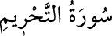

<a name=9713></a><br/>
<b>66- et-TAHRÎM SÛRESİ</b><br/>
<i><b>Adını Hz. Peygamber’in bazı yiyecekleri kendisine yasakladığını anlatan birinci</b></i><br/>
<i><b>âyetten alır. Medîne’de nâzil olmuştur. 12 âyettir.</b></i><br/>
